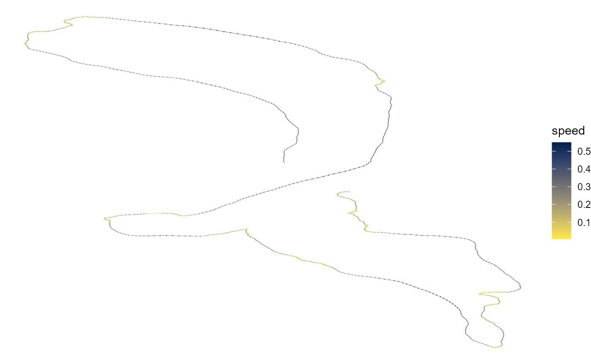

This method fails for any reflections of duration \(T\), where \(T = D/v\), where \(D\) is the displacement of the reflected points from the anchor point, and \(v\) is the speed cutoff used.
# get displacement distance and speed cutoff combinations displacement_distance <- c(10 ^ seq(0, 4, 0.1)) speed_cutoffs <- seq(0, 100, 5) # use formula for algorithm defeat data <- CJ(displacement_distance, speed_cutoffs)[, time_to_defeat := displacement_distance / speed_cutoffs]
# plot matrix of time to defeat ggplot(data)+ geom_tile(aes(speed_cutoffs, displacement_distance, fill = time_to_defeat / 60))+ scale_fill_viridis_c(option = "B", trans = "log10", limits = c(0.3, NA), breaks = c(0.3, 1, 3, 10, 30), labels = as.character(c(0.3, 1, 3, 10, 30)), na.value = "black")+ scale_y_log10(labels = scales::comma, breaks = c(10 ^ seq(0, 5), 500, 5000))+ scale_x_continuous(breaks = c(3, 10, seq(20, 100, 20)))+ coord_equal(ratio = 50, xlim = c(3, NA), ylim = c(100, NA), expand = FALSE)+ theme_test()+ theme(axis.text.y = element_text(angle = 90, hjust = 0.5), legend.position = "top")+ labs(x = expression("speed cutoff" ~ italic("v") ~ "(m/s)"), y = expression("displacement distance" ~ italic("D") ~ "(m)"), fill = "reflection duration (minutes)")
Figure showing the time (in minutes) required to beat the ‘next reasonable speed’ method, for various combinations of the reflection distance from the real positions, D and the speed cutoff, v. Area in black represent combinations that fail
# read some simulated data data <- data.table::fread("vignette_data/simulated_data.csv") # get speed estimate data$speed <- atlastools::atl_get_speed(data) ggplot(data)+ geom_point(aes(x, y, col = speed), shape = 16, size = 0.1)+ geom_path(aes(x, y, col = speed), size = 0.1)+ scale_colour_viridis_c(direction = -1, option = "E")+ theme_void()+ labs(x = NULL, y = NULL)
An example of a reflection, indicated by the dark line away from the real track shown in a lighter colour.
And now with refelection removed.
ggplot(atlastools::atl_remove_reflections(data))+ geom_point(aes(x, y, col = speed), shape = 16, size = 0.1)+ geom_path(aes(x, y, col = speed), size = 0.1)+ scale_colour_viridis_c(direction = -1, option = "E")+ theme_void()+ labs(x = NULL, y = NULL)
## first anchor at 548## reflection ends 551
WIP.